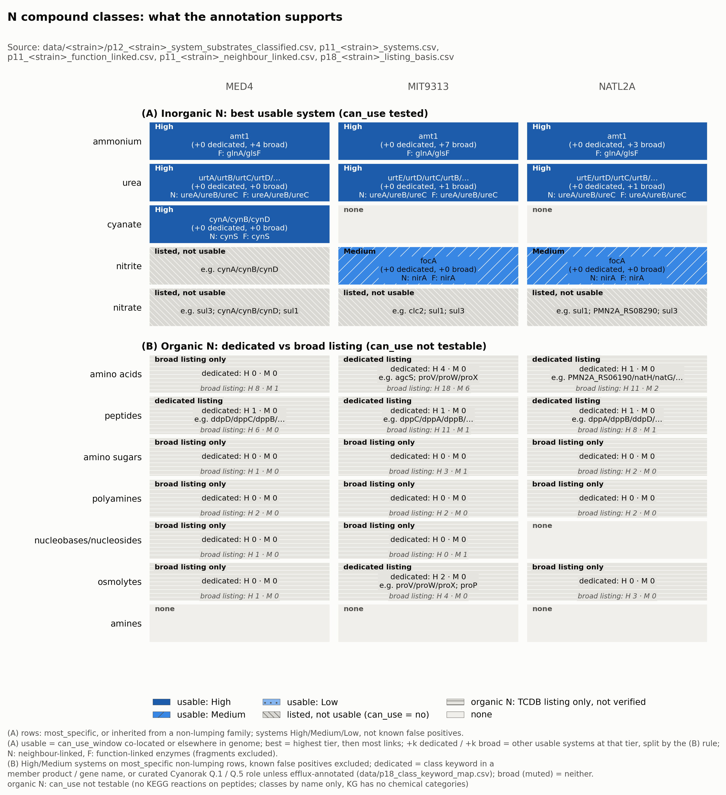
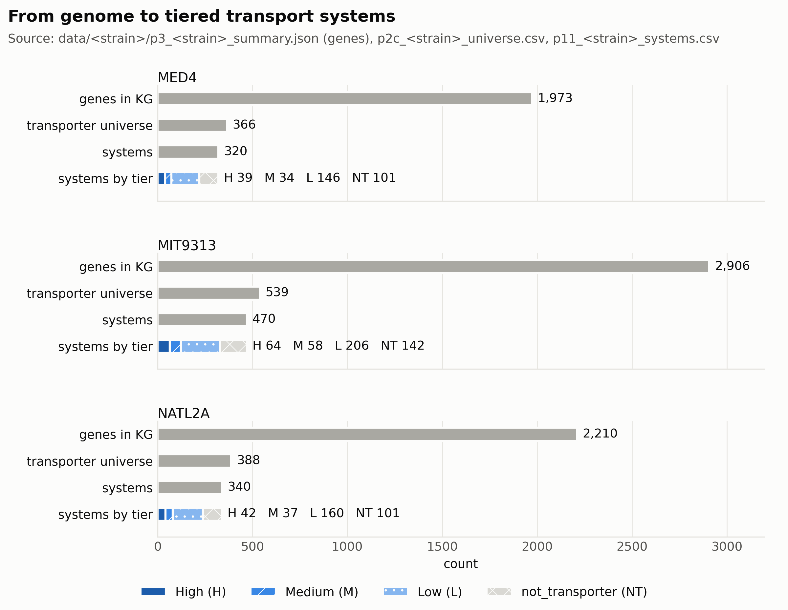
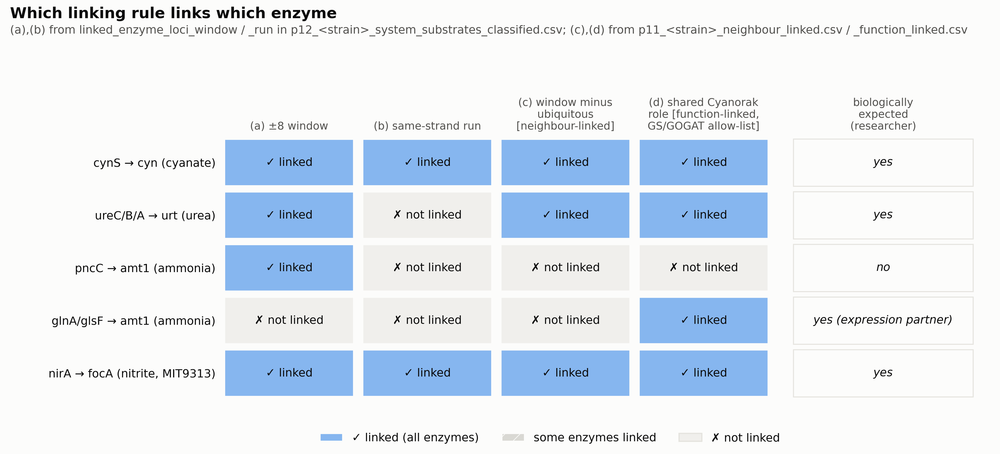
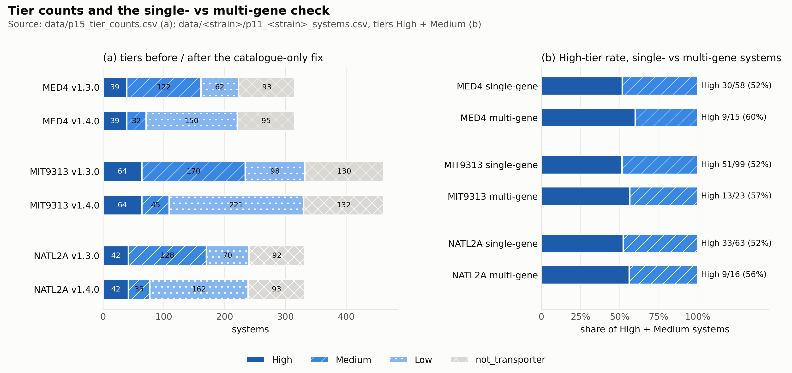
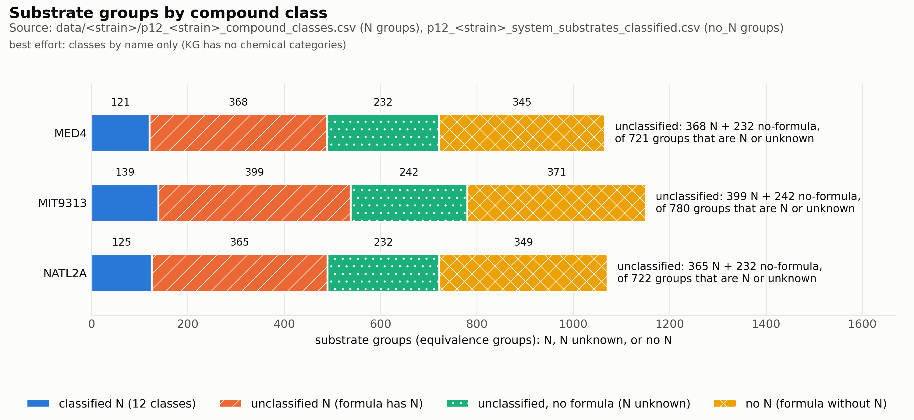
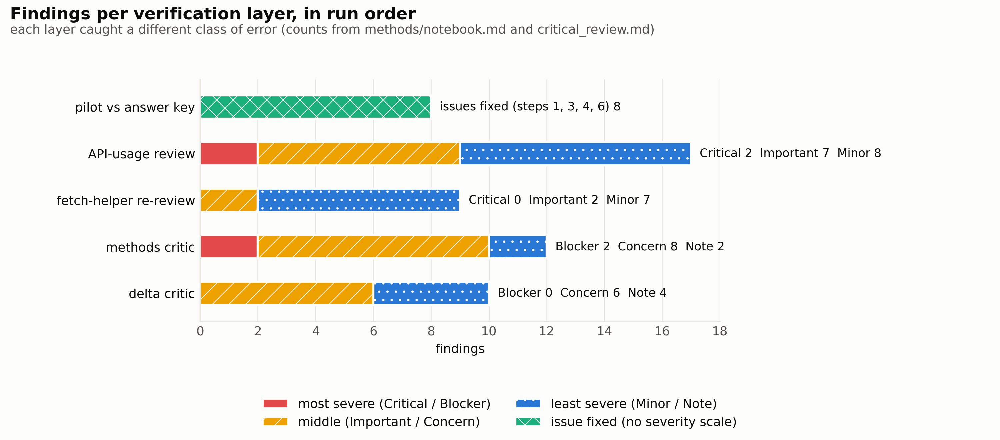
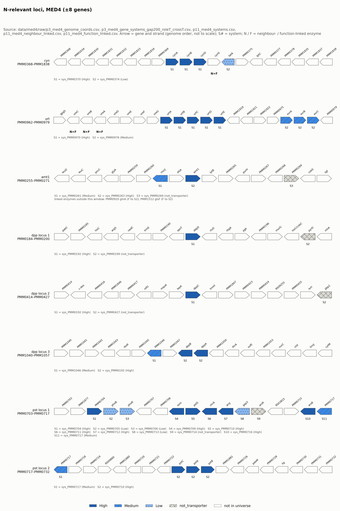
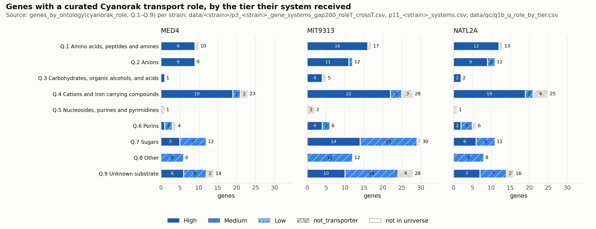
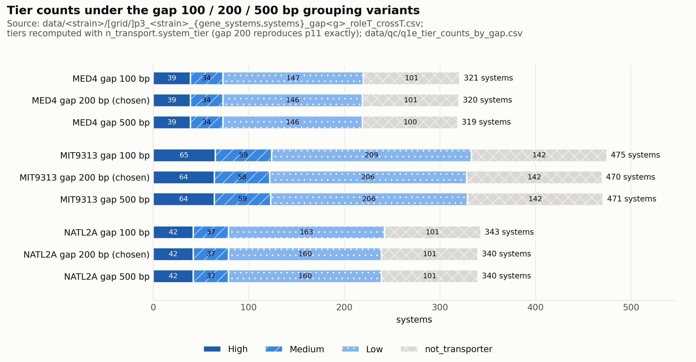

The first Run milestone built, for three Prochlorococcus strains, every annotated transport system with what it carries, how sure the annotation is, and which enzymes back it. No expression data has been pulled yet; this page is for deciding whether these tables are good enough for the analysis milestone to read expression against.
For the five inorganic nitrogen sources the annotation gives a clear answer, because whether the strain can use the compound is testable. All three strains have a complete, high-confidence ammonium importer (amt1) and urea importer (urtA–E, with urease linked both by position and by curated role). Only MED4 has the cyanate system (cynA/B/D with cyanase). Only MIT9313 and NATL2A can take up and use nitrite (focA next to nirA). No strain can use nitrate, even though transporters list it. Each strain also has other usable systems that list ammonium, but all of them are K⁺/Na⁺ transporters (ktrAB, nhaS) whose database family lists ammonium. They are shown as “broad”, not as extra ammonium routes. For organic nitrogen, use cannot be tested. The figure separates dedicated listings, where the gene description names the class, from broad ones, where the class is inherited from the database subfamily. By that split, the dipeptide system dpp is the only dedicated organic-N importer in MED4. MIT9313 adds 4 amino-acid systems, two of them osmoprotectant (proVWX, proP), and NATL2A adds 1.

Each strain's genes narrow to a transporter universe, then to systems, then to confidence tiers. After the last fix, most systems sit in Low — not because they are wrong, but because the annotation behind them is only a catalogue listing or a catch-all family. High and Medium together are the candidate set the analysis will read expression against.

methods/figures/fig1_build_funnel.png.Every rule here was a choice between two ways of being wrong. These are the ones that shape what the analysis will see; all were agreed with you at the decide gate.
ictB dropped out.focA (curated nitrite transporter) without promoting enzymes.Ferritin, glutathione S-transferases and sodX stay as disclosed false positives.glnA/glsF; drops the pncC coincidence.Only ~6 links per strain concern N import; most function links join GST paralogs. Co-annotation, not co-regulation.
pncC; same-strand run loses urease; window minus ubiquitous drops pncC but cannot reach glnA/glsF; the shared curated role reaches them at any distance.

Each layer caught a different kind of error. The toy tests stayed green throughout; the problems were found by the layers after them.

focA next to nirA. For the two control strains this check is close to circular (expectation and outcome share data); the informative cases are focA and MED4's cyanate system.You asked for more correctness checks before approving. Six were run. Three of them found real problems, which were fixed in versions 1.5–1.6.1, and a third critic pass reviewed the fixes. No nitrogen system changed membership or tier at any point. All High-tier counts are unchanged (39 · 64 · 42).
| Check | Found | Change |
|---|---|---|
| Neighbouring transporter genes split into different systems | Exporters evrA/B + evrC and devB + devC/A were split, in every strain | Directly adjacent ABC parts now join (a second permease or a membrane-fusion gene is allowed). 5 systems merged. |
| Genes with a curated Cyanorak transport role, by tier (fig 8) | Porins, a chloride channel and “permease” genes were missing from the list. ggtA–D and others were stuck in Low. | Curated-role genes are a 4th source. A curated role lifts “broad family only” to Medium: 23 loci, 12 of them efflux/export proteins (now flagged), 6 DMT permeases, 5 import-type. |
| Listed substrate vs gene description, High systems | sul1/sul3 list amino acids and nitrate; ktrA/nhaS list ammonium. The database lists the whole subfamily’s substrates. | Each listing is marked dedicated or broad. A multidrug pump with only a curated role is not dedicated. |
| Random 10 systems per tier | sodX and a glutathione S-transferase sampled in Medium | Both now flagged as known false positives, with ferritin and a MAPEG protein |
| Grouping gap 100 / 200 / 500 bp (fig 9) | Nitrogen systems identical; tier counts move by ≤ 3 | none |
| Same transporter across strains | amt1, urt, dpp, mnt, phn, fut, sul, ktr: same tier in all three. MIT9313 pst has two pstS. | none (gene names only; no orthologs used) |

cyn, urt, amt1 and pst systems and the three dpp loci are grouped as expected; evrABC next to urt is now one system. The MIT9313 and NATL2A maps are in methods/figures/.
hisF, hemH, metC) and porins with no transporter domain.
| Item | Where | Handling |
|---|---|---|
| Ferritin counted as a transporter | PMM0804, PMT0495, PMT0499 | flag known_false_positive; can't be separated from focA by rule |
Glutathione S-transferases, MAPEG, sodX in Medium | all three strains | TCDB lists them; flagged known_false_positive |
| Most curated-role promotions are export machinery | 12 of 23 lifted loci | flag efflux_annotated; import readings must check it |
| Substrate lists are per subfamily, not per gene | all organic-N classes | dedicated vs broad split; “dedicated” = the annotation names the class, not proof of transport |
| Porins not in the candidate set | som PMM1121, PMN2A_0440 | no transporter domain or TCDB; disclosed |
| Peptides: usability untestable | dpp systems | no KEGG reactions on dipeptides; labelled can_use not applicable |
| Nitrate has two unlinked IDs in the KG | ChEBI 14654 · KEGG C00244 | linked by name, flagged name_soft |
| Genes without coordinates | 96 MED4 · 517 MIT9313 · 152 NATL2A | reported, cannot be neighbours |
| No chemical categories in the KG | all classes | names only; revisit trigger |